The landing · Pine Bluff, AR · 1894
The landing · Pine Bluff, AR · 1894Where the River Met the Rail
Steamboats made Pine Bluff a cotton port. In 1894 the Cotton Belt put its main engine shops there.
A new vision for life in the Delta.
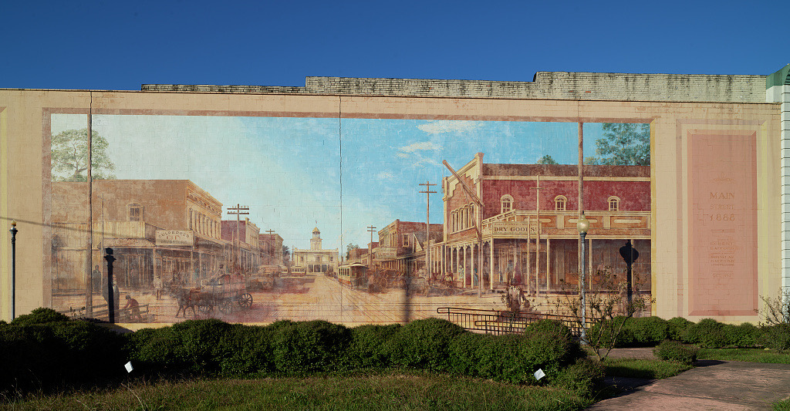
The Delta has shaped how the world works, moves and makes culture. Delta Futurism starts with that inheritance, on both sides of the river, and asks what we can create next.
where it starts,
A river and the rail beside it, the levee holding both back, the field, the road out, a home of one’s own and a college. Each one is the start of a longer story.
The landing · Pine Bluff, AR · 1894Steamboats made Pine Bluff a cotton port. In 1894 the Cotton Belt put its main engine shops there.
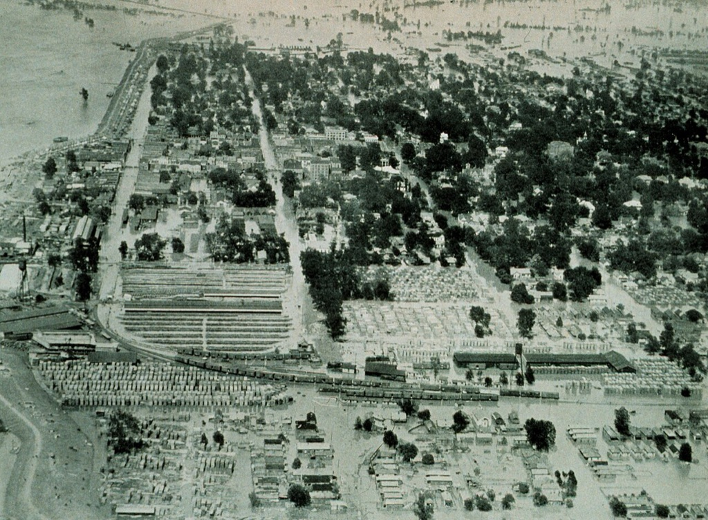
The levee · Greenville, MS · 1927The levee broke at Mounds Landing. Black refugees were held in levee camps and made to work. Arkansas had 80 of the Red Cross camps.
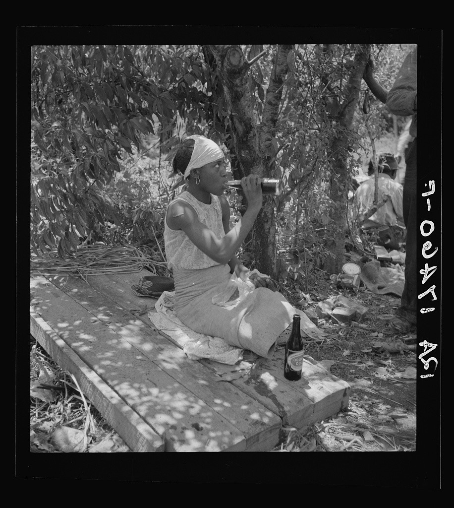
The field · near Clarksdale, MS · 1937Hoers worked 6 a.m. to 7 p.m. for a dollar. The year’s supplies came from the plantation store at 25 to 65 percent interest.
 The road · Pine Bluff, AR · 1938
The road · Pine Bluff, AR · 1938Cotton pickers board a truck for the fields. Many later took the same roads north.
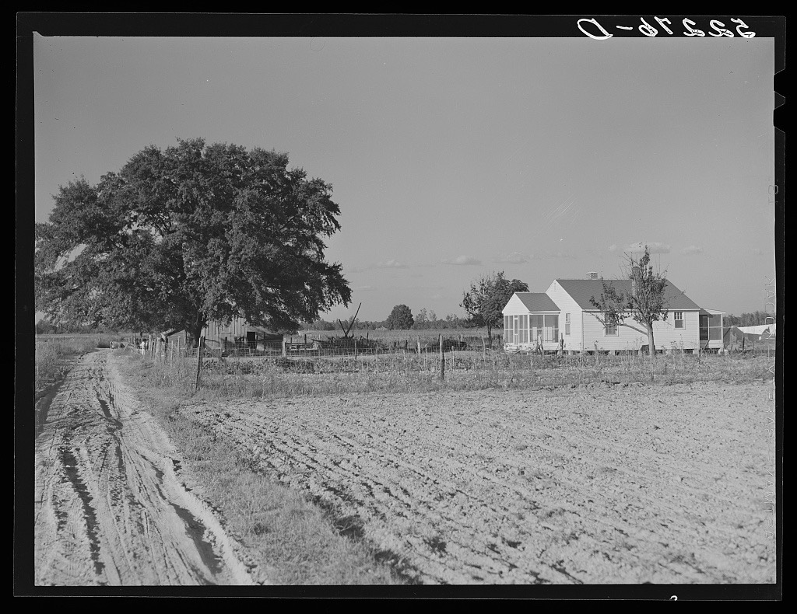
The home · Phillips Co., AR, and Belzoni, MS · 1937–39The Lakeview project let 142 Black families buy farms in Phillips County. Near Belzoni, Cube Walker moved into this new home.
 The college · Pine Bluff, AR · 1875
The college · Pine Bluff, AR · 1875Branch Normal opened with seven students. It is now the University of Arkansas at Pine Bluff. Mississippi Valley State followed at Itta Bena in 1950.
out of the Delta,
People born and raised here carried what they knew to Chicago, New York, Tulsa and Detroit, and built things the country still uses. The list keeps growing.
and some stayed,
Others built at home: towns, transit, farms, unions and clinics. Local historians call Pine Bluff of 1880–1925 “the African American Paradise of the South.”
Founded the Delta’s first all-Black town on railroad land, and served as its first mayor.
Ran a store, a fairground and a mule-drawn streetcar line. Today’s Pine Bluff Transit descends from it.
Born enslaved, he built up about 12,000 acres and a string of businesses.
Seven Black and eleven white sharecroppers organized together, and pushed federal farm policy.
Built the local NAACP and brought SNCC to the Delta to register voters.
A Pine Bluff lawyer who filed the Little Rock school case that became Cooper v. Aaron.
The first rural community health center in the country, and still open.
Started Freedom Farm: food, a “pig bank” and housing, owned together.
They didn’t wait for the lines to reach them.
on the weekend,
Jukes, radio and Black-owned venues formed a circuit that carried Delta music across the South. The church was where people prayed, and where they organized.
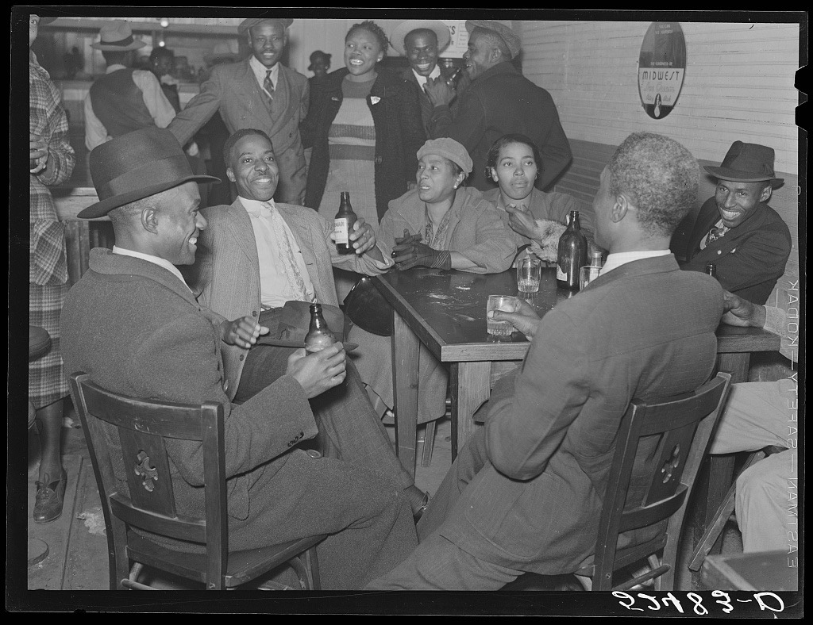
23A 24A
24A 25A
25AThe Delta grew the cotton, laid the track, built the institutions and made the music. Much of what it made was owned and banked somewhere else.
then the work changed,
In 1944 a field near Clarksdale grew and picked a whole cotton crop without hand labor. People were already leaving: about a million Black Mississippians went north between 1910 and 1960. The machines followed them, and the jobs that held river towns together thinned out. Pine Bluff had 57,389 people in 1970 and about 38,200 in 2025.
The money ran through Memphis. A Delta writer said in 1935 that the Delta begins in the lobby of the Peabody Hotel. Memphis is still the hub, and still inside the Delta Regional Authority’s map.
U.S. Census Bureau, population estimates, Vintage 2025
The Delta kept working. Less and less of what it earned stayed.
right now,
People creating, teaching, building businesses and caring for their communities today.
 Neighbors
NeighborsVolunteers repaint a veteran’s house in eastern Pine Bluff.
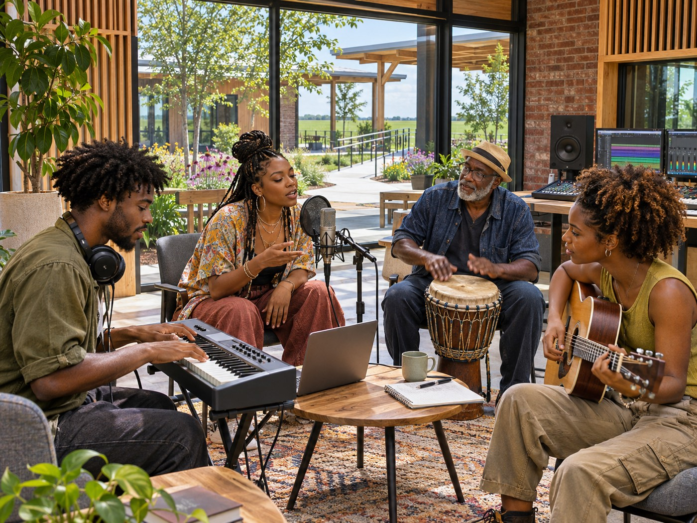
MusicClarksdale’s Kingfish Ingram won a Grammy and named his own label after two local clubs.
 Work
WorkA textile worker at the Pine Bluff Arsenal measures a cadet’s parka.
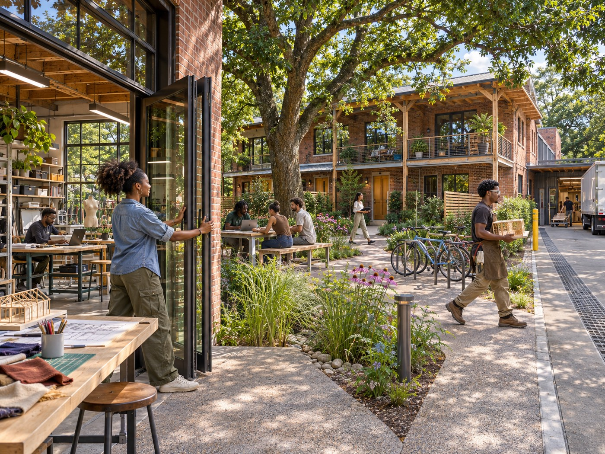
BusinessIn Helena, a farm family distills sweet-potato vodka on Cherry Street. In Clarksdale, a hub backs Black-owned businesses.
 Gathering
GatheringA fellowship hall full, and everyone gets a turn.
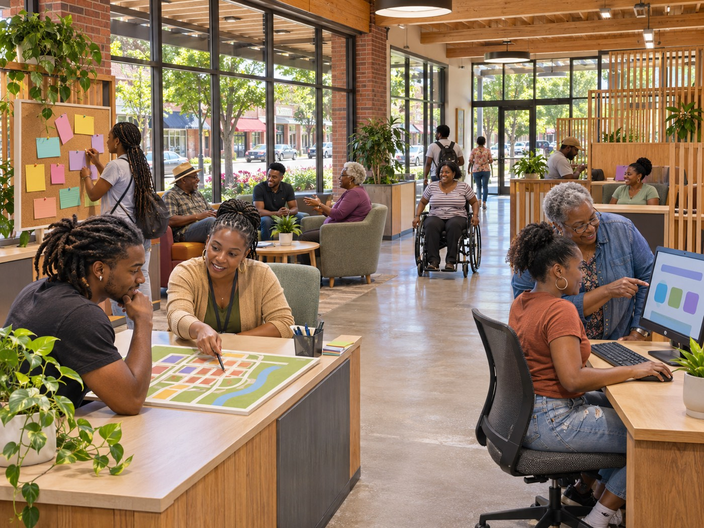
LearningAfter school, the lesson starts with home.
and now,
Steel, data centers, defense and power: $21.9 billion announced or under way in the Delta since 2024, on both sides of the river.
| Where | What | Size and status |
|---|---|---|
| SteelOsceola, AR | U.S. Steel’s Big River 2 mill and a new iron plant; Hybar’s two rebar mills | About $7 billion: two operating since 2024–25, two under construction |
| DataWest Memphis, AR | Google’s first Arkansas data center | $4 billion through 2027, under construction |
| DataVicksburg, MS | An Amazon Web Services data center, and a new Entergy plant to power it | $3 billion, announced 2025; $1.2 billion plant under way |
| DefensePine Bluff Arsenal, AR | Hanwha Defense USA’s munitions campus | About $2.2 billion and up to 400 jobs, planned |
| PowerJefferson County, AR | Arkansas Cypress, solar and battery; the Jefferson Power Station, gas | $1.6 billion each, both approved; solar due end of 2028, gas 2029 |
| PowerGreenville, MS | Entergy Mississippi’s Delta Blues power station | $1.2 billion, under construction, due 2028 |
| MakingGreenwood and Drew, MS | Wheels, fabrication, packaging | $2 million to $23 million each |
| Still leavingArkansas City, AR | Clearwater Paper’s Cypress Bend mill | About 70 of 320 jobs cut, April 2026 |
| IdleYazoo City, MS | CF Industries’ nitrogen plant | Shut since November 2025, restart planned 2027 |
Not counted: more than $20 billion of AI data centers in Southaven, in the Memphis suburbs, and Amazon’s $21 billion in Madison County, outside the Delta.
and people,
Black Americans are moving South again: the South took 94 percent of the country’s Black population growth in 2020–21. Here, they are landing in the suburbs. In the rural Delta the numbers are still falling, even where the steel and data centers are going in.
In Mississippi County, Arkansas, about $7 billion of steel is going in. About half the steelworkers live outside the county, and the county lost 7 percent of its people in five years.
U.S. Census Bureau, population estimates, Vintage 2025; Brookings
follow it,
A big build spends most of its money on equipment made somewhere else. The part that can stay is the land, materials, site work, labor and services. How much of that stays depends on whether local people and firms are ready to do the work.
McKinsey, global estimate, 2025. In West Memphis, $50 billion of the $60 billion in bonds the city authorized for Google is for equipment.
The gap isn’t the money. It’s the capability to catch it.
while it’s built,
Every plant, mill and data center buys the same kinds of work. Each one is a way in for a local business or worker.
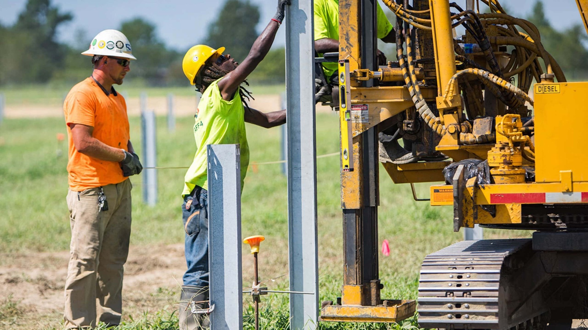
01 · Site and civilEarthwork, roads, fencing and foundations, most of it at the start.
 02 · Electrical
02 · ElectricalElectricians and line workers: the jobs with the longest careers after.
 03 · Hauling
03 · HaulingEvery load in and out, and the shops that keep the trucks running.
 04 · Food and lodging
04 · Food and lodgingHundreds of workers eat, sleep and buy supplies near the site every day.
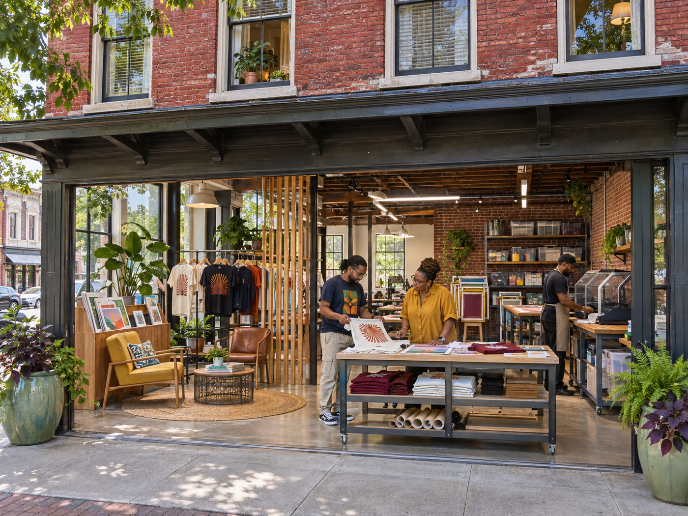
05 · Materials and supplyFabrication, safety gear, rentals and the hundred small orders a site places.
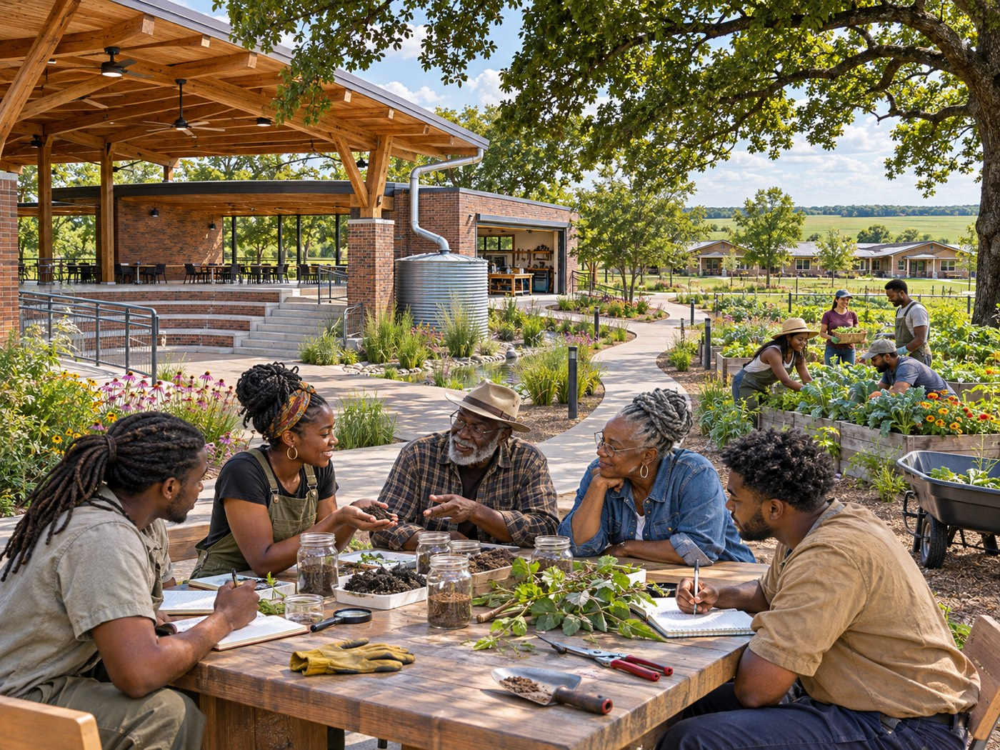
06 · Professional servicesEngineering, environmental work, legal, accounting and outreach.
 07 · Run and maintain
07 · Run and maintainFewer jobs, but they last for decades: technicians, mowing, security, repair.
what to build,
Each kind of work can leave something behind, if the county builds for it.
Sites, permits, contracts. The time to get ready.
The busiest years: crews, meals, hauling, supplies.
Decades of operations, maintenance and services.
Repowering, replacement, the next project.
Contracts decide who gets paid. Capabilities decide what stays.
and still,
Southern culture still sets the tone far from here. Grits & Biscuits has thrown Dirty South parties in New York, LA and Houston since 2010. Hot Water Cornbread brings Southern food and music to Los Angeles. A town in Norway, Clarksdale’s sister city, draws tens of thousands to a blues festival every year.
At home, Arkansans were celebrating emancipation in Little Rock, Pine Bluff and Helena by the 1880s. In 1942 a Little Rock union contract made Juneteenth a paid holiday, 79 years before the nation did.
Memphis Tourism; Mississippi PEER, 2024; Tourism Economics, 2017
People travel for this culture. Too few of their nights and dollars stay here.
a reimagined future,
The places that made the Delta, built again on top of the investment arriving now. These are ideas, not plans, and each one says who owns it.
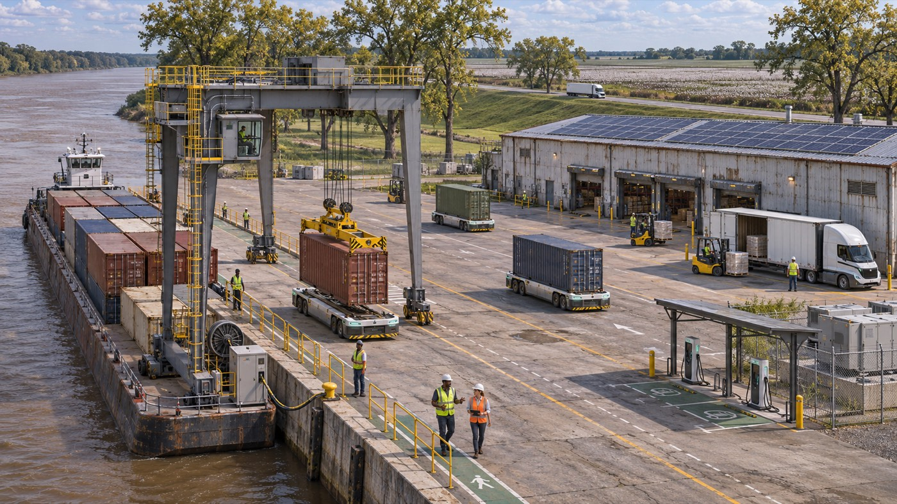
Cranes and carriers that plug in, on a river that already carries barges. Run by dockworkers who live here.
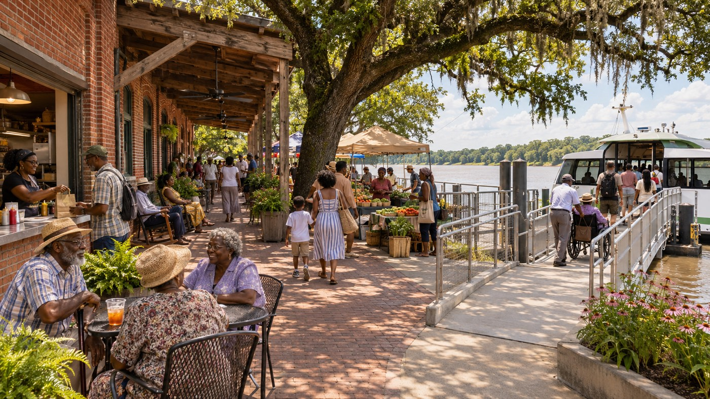
The levee that held the water back becomes the place for Saturday markets. Stalls that belong to county growers.
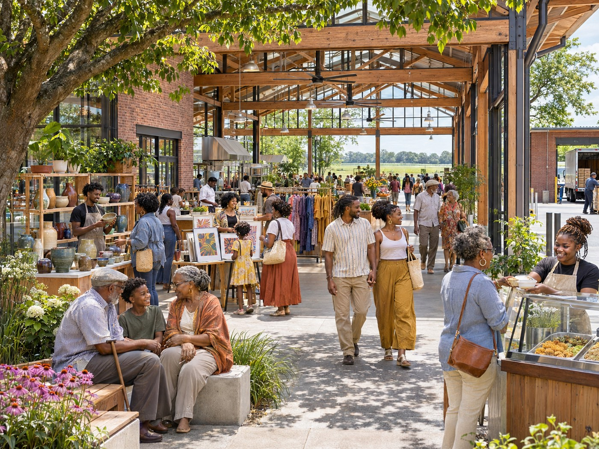
What the field grows feeds the crews and the county first. No buying on credit from the owner.

The old depots still stand. Trains and shuttles could stop again. A ride to work and school for anyone.
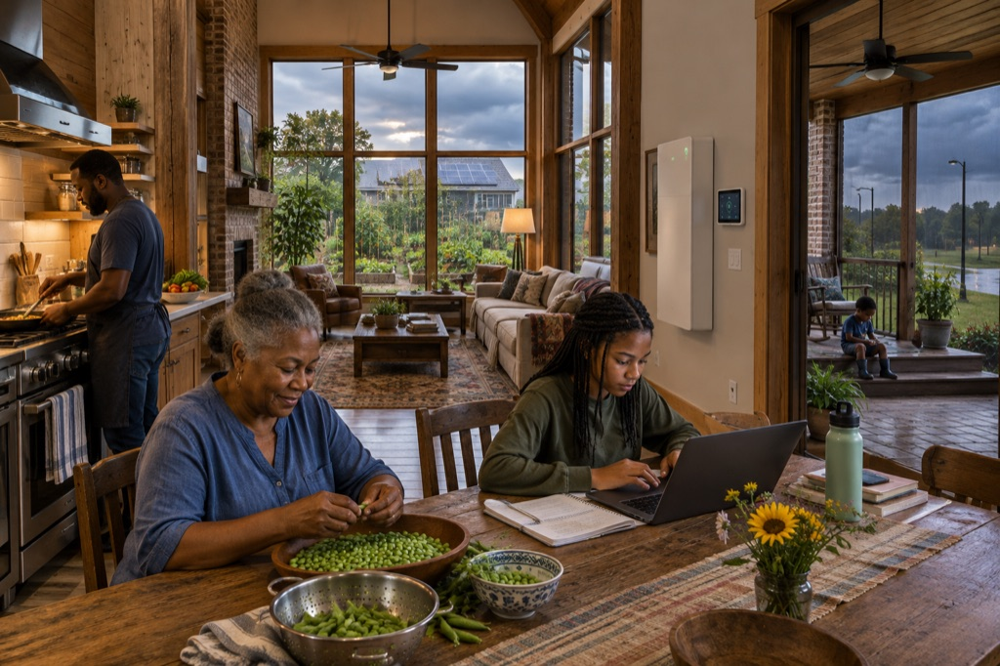
Deep porches, daylight, storm-proof power and room to work. On family land, owned by the family.
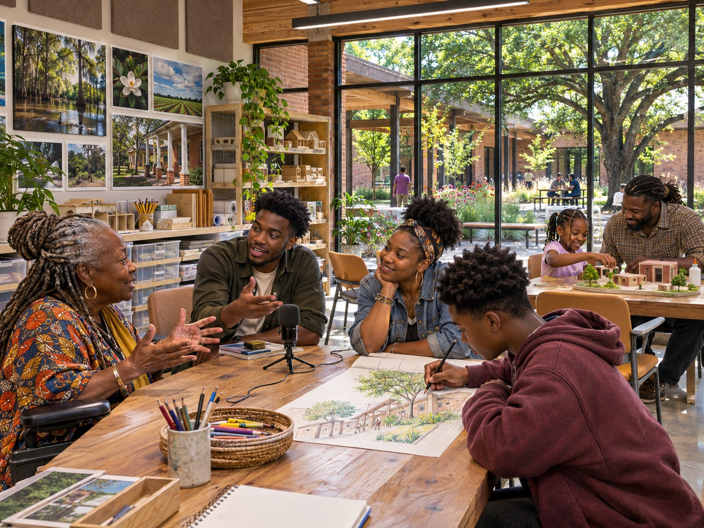
Apprentices, elders and students drawing up the next project together. What people learn here, they use and teach here.
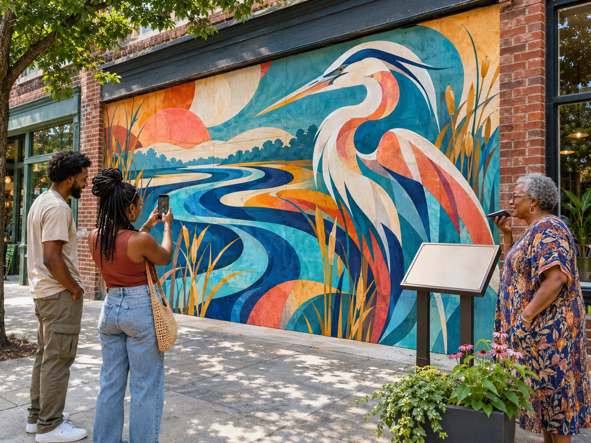
Venues, festivals and studios that bring the world here to hear it. Booked, owned and staffed from home.

The church and the clinic keep power when the grid goes down. Run by the people who meet there.
and from here,
A hundred years ago the Delta’s ideas had to leave to grow. The next ones can start here and travel out: the festival people fly in for, the label signed at home, the business that ships from the county, the method other regions copy.
Authored here, and the world comes to it.
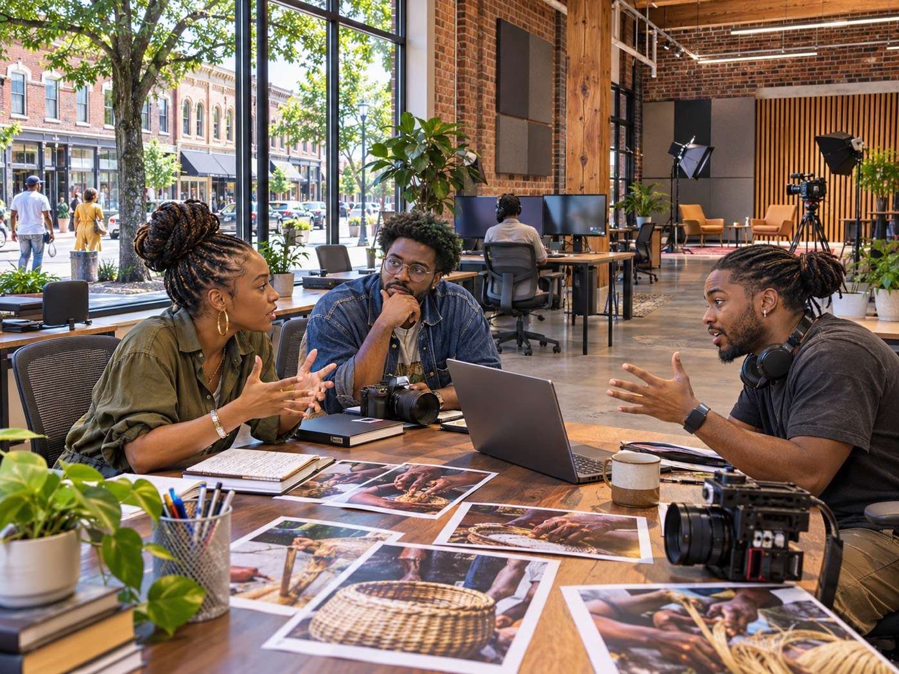
when the build is done,
A power plant or a mill is an asset: something built. A capability is something a community can do, keep doing and pass on. When the build ends and the crews move on, the skills, the businesses and the know-how are still in the county.
from vision to practice,
We start with a place’s people, history and existing efforts, and use research, storytelling, design and cultural planning to connect a shared direction to work partners can carry forward.
A way of looking at the region’s future that starts with its people, places and creative inheritance.
Working with the artists, institutions, residents and civic partners already building the region, not in place of them.
Each with its own purpose, partners, place and status.
What the build can leave behind.
A proposed community partnership with Entergy Arkansas, construction partners, local businesses, training institutions and landowners, starting with work the project already needs.
What could we build here next?
Delta Futurism begins with the belief that the region’s next chapter can grow from its own people, culture and imagination. The work is to make that future visible, bring others into it, and build the conditions for it to last.